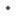

<!doctype html>
<html lang="en">
    <head>
        <meta charset="utf-8">
        <meta http-equiv="X-UA-Compatible" content="IE=edge">
        <meta name="viewport" content="initial-scale=1,user-scalable=no,maximum-scale=1,width=device-width">
        <meta name="mobile-web-app-capable" content="yes">
        <meta name="apple-mobile-web-app-capable" content="yes">
        <link rel="stylesheet" href="css/leaflet.css"><link rel="stylesheet" href="css/L.Control.Locate.min.css">
        <link rel="stylesheet" href="css/qgis2web.css"><link rel="stylesheet" href="css/fontawesome-all.min.css">
        <style>
        html, body, #map {
            width: 100%;
            height: 100%;
            padding: 0;
            margin: 0;
        }
        </style>
        <title></title>
    </head>
    <body>
        <div id="map">
        </div>
        <script src="js/qgis2web_expressions.js"></script>
        <script src="js/leaflet.js"></script><script src="js/L.Control.Locate.min.js"></script>
        <script src="js/leaflet-svg-shape-markers.min.js"></script>
        <script src="js/leaflet.rotatedMarker.js"></script>
        <script src="js/leaflet.pattern.js"></script>
        <script src="js/leaflet-hash.js"></script>
        <script src="js/Autolinker.min.js"></script>
        <script src="js/rbush.min.js"></script>
        <script src="js/labelgun.min.js"></script>
        <script src="js/labels.js"></script>
        <script src="data/Iowa_0.js"></script>
        <script src="data/County_1.js"></script>
        <script src="data/CountySeat_2.js"></script>
        <script src="data/PopulatedPlaces_3.js"></script>
        <script>
        var highlightLayer;
        function highlightFeature(e) {
            highlightLayer = e.target;

            if (e.target.feature.geometry.type === 'LineString') {
              highlightLayer.setStyle({
                color: '#ffff00',
              });
            } else {
              highlightLayer.setStyle({
                fillColor: '#ffff00',
                fillOpacity: 1
              });
            }
            highlightLayer.openPopup();
        }
        var map = L.map('map', {
            zoomControl:true, maxZoom:20, minZoom:1
        }).fitBounds([[39.414150400435176,-96.9093697377787],[44.47194981974145,-89.85637078206251]]);
        var hash = new L.Hash(map);
        map.attributionControl.setPrefix('<a href="https://github.com/tomchadwin/qgis2web" target="_blank">qgis2web</a> &middot; <a href="http://leafletjs.com" title="A JS library for interactive maps">Leaflet</a>');
        L.control.locate({locateOptions: {maxZoom: 19}}).addTo(map);
        var bounds_group = new L.featureGroup([]);
        function setBounds() {
        }
        function pop_Iowa_0(feature, layer) {
            layer.on({
                mouseout: function(e) {
                    for (i in e.target._eventParents) {
                        e.target._eventParents[i].resetStyle(e.target);
                    }
                    if (typeof layer.closePopup == 'function') {
                        layer.closePopup();
                    } else {
                        layer.eachLayer(function(feature){
                            feature.closePopup()
                        });
                    }
                },
                mouseover: highlightFeature,
            });
            var popupContent = '<table>\
                    <tr>\
                        <td colspan="2">' + (feature.properties['Id'] !== null ? Autolinker.link(String(feature.properties['Id'])) : '') + '</td>\
                    </tr>\
                    <tr>\
                        <th scope="row">ST</th>\
                        <td>' + (feature.properties['ST'] !== null ? Autolinker.link(String(feature.properties['ST'])) : '') + '</td>\
                    </tr>\
                </table>';
            layer.bindPopup(popupContent, {maxHeight: 400});
        }

        function style_Iowa_0_0() {
            return {
                pane: 'pane_Iowa_0',
                opacity: 1,
                color: 'rgba(35,35,35,1.0)',
                dashArray: '',
                lineCap: 'square',
                lineJoin: 'bevel',
                weight: 3.0,
                fillOpacity: 0,
            }
        }
        map.createPane('pane_Iowa_0');
        map.getPane('pane_Iowa_0').style.zIndex = 400;
        map.getPane('pane_Iowa_0').style['mix-blend-mode'] = 'normal';
        var layer_Iowa_0 = new L.geoJson(json_Iowa_0, {
            attribution: '',
            pane: 'pane_Iowa_0',
            onEachFeature: pop_Iowa_0,
            style: style_Iowa_0_0,
        });
        bounds_group.addLayer(layer_Iowa_0);
        map.addLayer(layer_Iowa_0);
        function pop_County_1(feature, layer) {
            layer.on({
                mouseout: function(e) {
                    for (i in e.target._eventParents) {
                        e.target._eventParents[i].resetStyle(e.target);
                    }
                    if (typeof layer.closePopup == 'function') {
                        layer.closePopup();
                    } else {
                        layer.eachLayer(function(feature){
                            feature.closePopup()
                        });
                    }
                },
                mouseover: highlightFeature,
            });
            var popupContent = '<table>\
                    <tr>\
                        <td colspan="2"><strong>COUNTY</strong><br />' + (feature.properties['COUNTY'] !== null ? Autolinker.link(String(feature.properties['COUNTY'])) : '') + '</td>\
                    </tr>\
                </table>';
            layer.bindPopup(popupContent, {maxHeight: 400});
        }

        function style_County_1_0() {
            return {
                pane: 'pane_County_1',
                opacity: 1,
                color: 'rgba(35,35,35,1.0)',
                dashArray: '',
                lineCap: 'butt',
                lineJoin: 'miter',
                weight: 1.0, 
                fill: true,
                fillOpacity: 1,
                fillColor: 'rgba(209,212,217,1.0)',
            }
        }
        map.createPane('pane_County_1');
        map.getPane('pane_County_1').style.zIndex = 401;
        map.getPane('pane_County_1').style['mix-blend-mode'] = 'normal';
        var layer_County_1 = new L.geoJson(json_County_1, {
            attribution: '',
            pane: 'pane_County_1',
            onEachFeature: pop_County_1,
            style: style_County_1_0,
        });
        bounds_group.addLayer(layer_County_1);
        map.addLayer(layer_County_1);
        function pop_CountySeat_2(feature, layer) {
            layer.on({
                mouseout: function(e) {
                    for (i in e.target._eventParents) {
                        e.target._eventParents[i].resetStyle(e.target);
                    }
                    if (typeof layer.closePopup == 'function') {
                        layer.closePopup();
                    } else {
                        layer.eachLayer(function(feature){
                            feature.closePopup()
                        });
                    }
                },
                mouseover: highlightFeature,
            });
            var popupContent = '<table>\
                    <tr>\
                        <td colspan="2"><strong>NAME</strong><br />' + (feature.properties['NAME'] !== null ? Autolinker.link(String(feature.properties['NAME'])) : '') + '</td>\
                    </tr>\
                </table>';
            layer.bindPopup(popupContent, {maxHeight: 400});
        }

        function style_CountySeat_2_0() {
            return {
                pane: 'pane_CountySeat_2',
                opacity: 1,
                color: 'rgba(35,35,35,1.0)',
                dashArray: '',
                lineCap: 'butt',
                lineJoin: 'miter',
                weight: 1.0, 
                fill: true,
                fillOpacity: 1,
                fillColor: 'rgba(182,65,78,1.0)',
            }
        }
        map.createPane('pane_CountySeat_2');
        map.getPane('pane_CountySeat_2').style.zIndex = 402;
        map.getPane('pane_CountySeat_2').style['mix-blend-mode'] = 'normal';
        var layer_CountySeat_2 = new L.geoJson(json_CountySeat_2, {
            attribution: '',
            pane: 'pane_CountySeat_2',
            onEachFeature: pop_CountySeat_2,
            style: style_CountySeat_2_0,
        });
        bounds_group.addLayer(layer_CountySeat_2);
        map.addLayer(layer_CountySeat_2);
        function pop_PopulatedPlaces_3(feature, layer) {
            layer.on({
                mouseout: function(e) {
                    for (i in e.target._eventParents) {
                        e.target._eventParents[i].resetStyle(e.target);
                    }
                    if (typeof layer.closePopup == 'function') {
                        layer.closePopup();
                    } else {
                        layer.eachLayer(function(feature){
                            feature.closePopup()
                        });
                    }
                },
                mouseover: highlightFeature,
            });
            var popupContent = '<table>\
                    <tr>\
                        <td colspan="2"><strong>PLACE_NAME</strong><br />' + (feature.properties['PLACE_NAME'] !== null ? Autolinker.link(String(feature.properties['PLACE_NAME'])) : '') + '</td>\
                    </tr>\
                    <tr>\
                        <td colspan="2">' + (feature.properties['CO_NAME'] !== null ? Autolinker.link(String(feature.properties['CO_NAME'])) : '') + '</td>\
                    </tr>\
                </table>';
            layer.bindPopup(popupContent, {maxHeight: 400});
        }

        function style_PopulatedPlaces_3_0() {
            return {
                pane: 'pane_PopulatedPlaces_3',
                shape: 'diamond',
                radius: 2.0000000000000004,
                opacity: 1,
                color: 'rgba(35,35,35,1.0)',
                dashArray: '',
                lineCap: 'butt',
                lineJoin: 'miter',
                weight: 1,
                fill: true,
                fillOpacity: 1,
                fillColor: 'rgba(119,101,162,1.0)',
            }
        }
        map.createPane('pane_PopulatedPlaces_3');
        map.getPane('pane_PopulatedPlaces_3').style.zIndex = 403;
        map.getPane('pane_PopulatedPlaces_3').style['mix-blend-mode'] = 'normal';
        var layer_PopulatedPlaces_3 = new L.geoJson(json_PopulatedPlaces_3, {
            attribution: '',
            pane: 'pane_PopulatedPlaces_3',
            onEachFeature: pop_PopulatedPlaces_3,
            pointToLayer: function (feature, latlng) {
                var context = {
                    feature: feature,
                    variables: {}
                };
                return L.shapeMarker(latlng, style_PopulatedPlaces_3_0(feature));
            },
        });
        bounds_group.addLayer(layer_PopulatedPlaces_3);
        map.addLayer(layer_PopulatedPlaces_3);
        var baseMaps = {};
        L.control.layers(baseMaps,{' Populated Places': layer_PopulatedPlaces_3,' County Seat': layer_CountySeat_2,' County': layer_County_1,' Iowa': layer_Iowa_0,}).addTo(map);
        setBounds();
        </script>
    </body>
</html>
